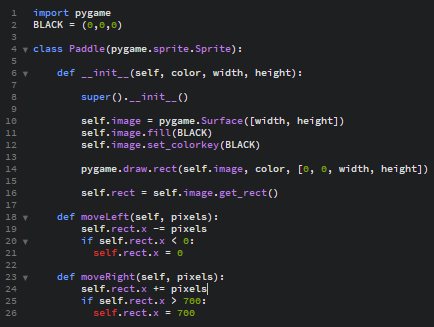

Kontroliranje Paddle-a
Za ta korak sem se vrnil nazaj na paddle.py
Napišemo kodo za premik v levo:
- def moveLeft(self, pixels):
- self.rect.x -= pixels
- if self.rect.x < 0:
- self.rect.x = 0, to kodo napišemo da Paddle ne more iti z zaslona
Nato pa napišemo še za premik v desno:
- def moveRight(self, pixels):
- self.rect.x += pixels
- if self.rect.x > 700:
- self.rect.x = 700
Ko to naredimo bi moral paddle.py izgledati takole:

Na paddle.py se ne bo treba več vračati.
Vrnemo se na main.py, da dodamo na katere gumbe se bo Paddle premikal.
Pod zanko dodamo naslednje ukaze:
- keys = pygame.key.get_pressed()
- if keys[pygame.K_LEFT]:
- paddle.moveLeft(5)
- if keys[pygame.K_RIGHT]:
- paddle.moveRight(5)
Sedaj če odpremo ta program bomo lahko že premikali Paddle.